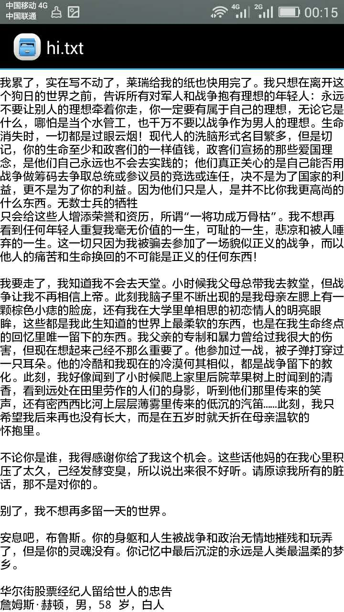
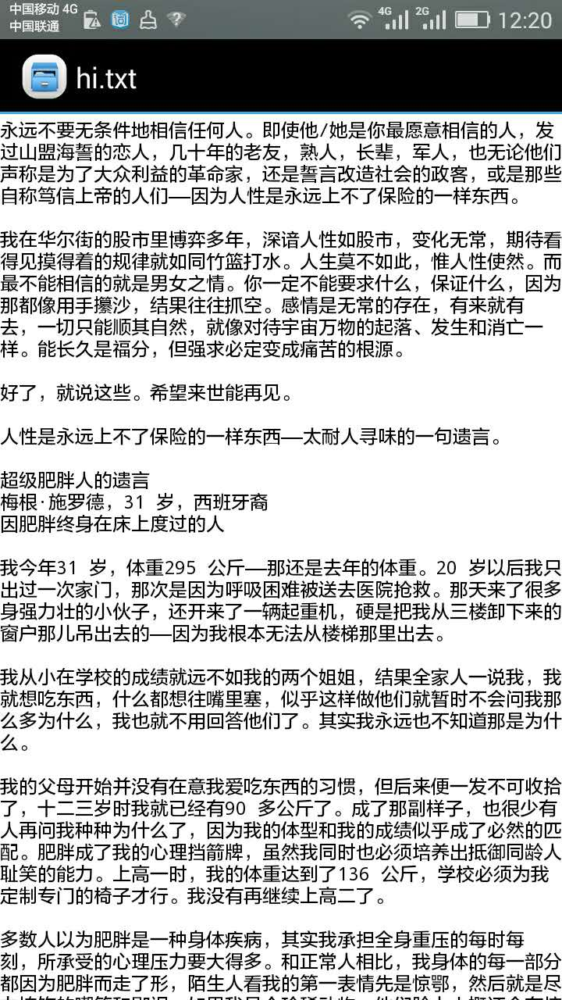

《纽约客的临终遗言》读后感(01)
Sat 04 June 2016
［点击上方蓝色字 零壹 ↑↑↑，可快速关注］
1
``` 白血病患儿留下的秘密 吉米·索尔，5 岁，白人 白血病患儿
```
你承受不起撒谎带来的后果，就不要撒谎。无知容易造成自己和他人的悲剧。
2
```
邮递员的终生悔恨 西门·斯图尔特，76 岁，墨西哥裔 退休邮递员
```
不自信、自卑毁了邮递员自己的幸福。 嫉妒毁了别人的幸福，甚至生命。 心病、抑郁的情绪，真的能够影响健康！
3
百老汇编剧的临终告白
西恩·奥尼尔，77 岁，白人
百老汇音乐剧编剧
人生不离爱与信任、认同。爱生恨，情，仇。 无论多么风光，最终都会归于平淡。 什么年轻，干什么事情。做了自己想做的事情，此生无憾。
4
``` 越战老兵的最后狂言 布鲁斯·弗顿，58 岁，白人 越战老兵，流浪汉，艾滋病人
``` 命运本来就是不公平的。 但是我们是否就应该向命运屈服呢？ 人生是应该掌握在自己手中，还是别人手中：
摘录一段话吧：
我累了，实在写不动了，莱瑞给我的纸也快用完了。我只想在离开这个狗日的世界之前，告诉所有对军人和战争抱有理想的年轻人：永远不要让别人的理想牵着你走，你一定要有属于自己的理想，无论它是什么，哪怕是当个水管工，也千万不要以战争作为男人的理想。生命消失时，一切都是过眼云烟！现代人的洗脑形式名目繁多，但是切记，你的生命至少和政客们的一样值钱，政客们宣扬的那些爱国理念，是他们自己永远也不会去实践的；他们真正关心的是自己能否用战争做筹码去争取总统或参议员的竞选或连任，决不是为了国家的利益，更不是为了你的利益。因为他们只是人，是并不比你我更高尚的什么东西。无数士兵的牺牲
只会给这些人增添荣誉和资历，所谓“一将功成万骨枯”。我不想再看到任何年轻人重复我毫无价值的一生，可耻的一生，悲凉和被人唾弃的一生。这一切只因为我被骗去参加了一场貌似正义的战争，而以他人的痛苦和生命换回的不可能是正义的任何东西！


未完待续...
困于爱情 看得不够开 执于过往 受制于父母 受制于道德、风俗
只有强大的内心，才能看遍世界的繁华！
执于人，执于事，都会让你无法释怀，无法走远。浪费了时间，浪费了生命。
切换情绪，切换心境，真是一种很重要很有用的能力！ 有些人这方面能力很强，强到甚至被人误以为是疯子！
（本文首发于微信公众号： 零壹 ，微信搜索 零壹 或 magicof01 ，也可以扫描文章底部二维码快速关注）

Category: misc